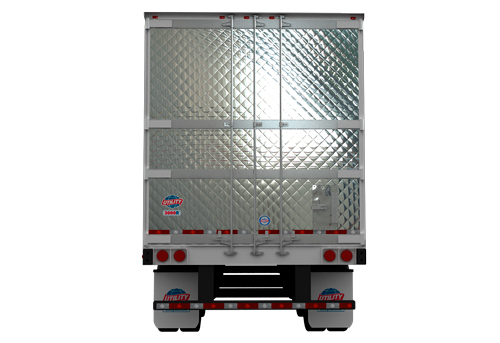

|  |
Características
-
Parte superior del marco trasero con diseño exclusivo de amplitud de apertura de puertas.
-
Marco trasero de acero inoxidable.
-
Refuerzo masivo en la parte inferior.
-
Acabado de acero inoxidable.
Ventajas
-
Mayor apertura de puertas.
-
El diseño eficiente para soportar la fuerza y el alto impacto.
-
El diseño eficiente soporta fuerzas de impacto de muelle.
-
Fácil y uniforme limpieza con una apariencia de alta calidad.
|